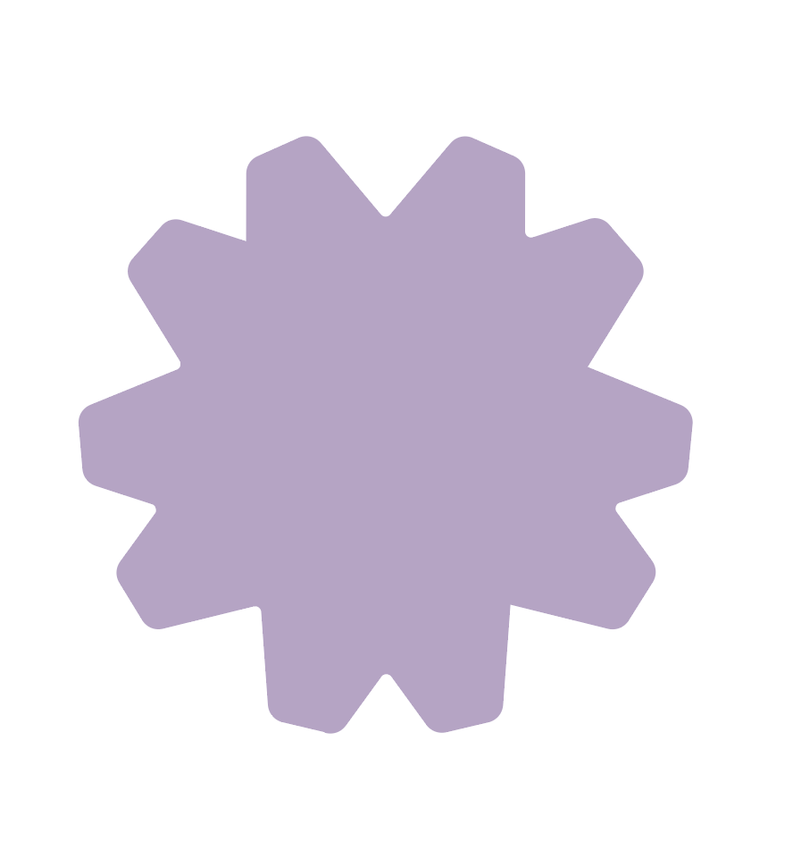

慢慢
AI 陪伴 App
我会先了解你，再陪你说话。
不是测试你是什么样的人，只是帮我找到更适合陪你的方式。你可以保存、修改，也可以随时删除自己的画像。
低压陪伴先接住你，不急着给答案
情绪梳理把堵住的地方慢慢放出来
个性化回复按你的状态调整陪伴方式
这不是诊断，也不是给你贴标签。第一版画像只是起点。
约 3 分钟
先认识你一点
不用选最准确的，选第一眼最像的就好。它不是心理诊断，只是让我以后少一点误解你。
我的陪伴说明
你现在更像「雾中整理者」
这不是一个固定标签，也不是在定义你。它只是我对你当前状态的第一版理解，之后随时可以改。
我现在这样理解你
你可能不是不想变好，而是最近脑子里装了太多事情。你需要的不是马上被分析， 而是先有一个地方把混乱放下来。
我以后会这样陪你
- 你情绪很满的时候，我会先接住，不急着给建议。
- 你开始想整理原因时，我会轻轻帮你映照。
- 你准备行动时，我只给一个很小、能做到的下一步。
我会尽量避免
- 直接说“你应该……”或者“你的问题是……”。
- 把你固定成某一种人格。
- 在你很累的时候催你立刻变好。
你可以从很小的一句话开始。
“我今天有点撑不住。”
“我不知道为什么很烦。”
“我想把一件事理清楚。”
慢慢不是心理诊断工具。它会陪你整理，但重要风险请及时寻求现实支持。
今日
今天感觉怎么样？
今日陪伴
你不用把今天过得很漂亮。先把自己放稳一点，就已经算是在往前了。
继续上次
还没有未结束的话题。你可以从一句很小的话开始。
画像
我的陪伴画像
AI 对我的理解
AI 最近学到的
- 你压力大时，更适合先被接住，再进入分析或行动。
管理记忆
我的
设置与隐私
AI 回复偏好
危机提示
慢慢不是医疗或心理诊断工具。如果你正处在现实危险里，请优先联系身边可信的人或当地紧急支持。
模型设置
Remote Config 状态
正在读取配置状态...
主 slogan
慢慢说，我会慢慢懂你。
副 slogan
一个越来越懂你的 AI 陪伴。
官网 / App Store 简介
慢慢是一款会逐渐认识你的 AI 陪伴产品。它不急着给你答案， 而是先理解你的状态，再用适合你的方式陪你聊天、整理情绪、靠近下一步。
更情绪化的介绍
有些时候，你不需要马上被分析，也不需要立刻变好。 你只是需要一个地方，慢慢把话说出来。慢慢会陪你听见自己，也慢慢学会怎么陪你。